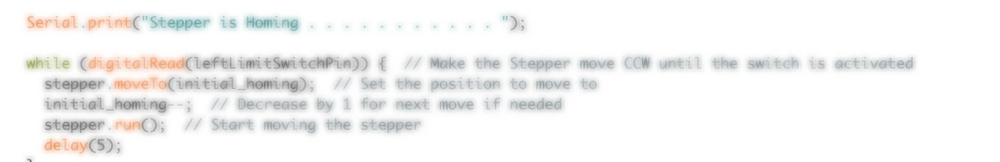

Firmware
Without the firmware subsystem, Big Knit would just be a bunch of stationary materials. Here's how it moves!
The basic concept of the firmware code is to run a stepper motor a set distance in one direction and then run that same distance in the opposite direction a given number of times. To do this, we utilize multiple libraries and drivers, take in user input, and perform calculations to make the process highly automated.
The firmware went through many iterations to become what it is today. Throughout the process, we tested out various libraries on the firmware side and drivers on the electronics side with which the firmware needed to interface. Each change required us to rework the code and ensure reliable functionality. Below, we explain our final firmware design in depth and what the decision making process looked like.
Go to Full Source CodeLibraries
- AccelStepper: AccelStepper is used to control stepper motors. We found that its built-in functions for internally computing acceleration and deceleration or whether to take a step were perfect for our use-case. In particular, AccelStepper's
distanceToGo()function allowed us to use our limit switches as E-stops and easily write non-blocking code to direct the knitting motion. - ezButton: ezButton is used to detect changes in a button state. Initially, we had tried using ezButton with our limit switches during the normal knitting process. It didn't work well in that instance because of trouble with debouncing and continually and reliably checking the button state. We did, however, find that is was useful for our homing function. In this use case, the limit switch would only need to be pressed and depressed once which the library worked well to capture.
Broad Structure
The overall structure of the firmware code consists of 5 main parts:
- Set up
- Homing
- User Input
- Calculations
- Knit
Homing
The homing process is vital as a first step so that the stepper has a safe starting position. This process allows us to set up the limit switches as E-stops and ensure that the stepper is able to produced the desired knit input by the user. The homing process begins by slowly moving the stepper motor CCW until it hits the limit switch at that end of the linear rail. We set the speed and run using AccelStepper library functions and detect the change in the limit switch by continually checking its state via digitalRead() at each step. Once the carriage hits the switch, it moves CW off of the switch until the switch is deactivated. This point becomes the stepper's home. While it is looking for the limit switch, the stepper moves very slowly so as to detect the switch as soon as possible. Once the stepper finds its home, we tell the stepper to reset its speed to the default knitting speed. We do this within the homing process so that the next time the stepper is called to take a step, it calculates its acceleration according to knitting speed.
User Input
Getting user input allows the user to specify how wide and how long they would like their knit to be. The medium for this communication is Serial. The capacity and interests of our team limited the software development of this project, so we decided that the built-in Serial interface of any IDE would be sufficient to provide our desired autonomous functionality. Once the motor is "homed," the user will be prompted to enter values for width and length one at a time. To read this input, we created a readSerial() function that is called. It takes in all available bytes from the buffer and turns it into an integer value. Then, it will send its final value back out to the user for confirmation. Once the code has received both width and length values, it stores them in global variables for future use. The length from the user is used to dictate how many rows the machine knits. The width value, however, must be processed before it is useful to the knitting process.
Calculations
The user input is only helpful so long as the code can make decisions based on those values. The calculations step makes the input meaningful. Ultimately, this process determines how many steps the motor must take in either direction to knit a row of desired width. As stated in the User Input section, the length given by the user can be used as is. So, the number of steps depends on the desired width, how far apart each of the needles on the machine are, and how far the cam will move with each step of the motor.
Unfortunately, this step was unable to be completed by the time of our demo. Due to health reasons, the firmware member of our team was out and thus unable to continue work to finalize this aspect. Had we more time, we would have completed this phase entirely so that the knit produced by the machine conformed to user input on its own. You will find this process roughly drawn out in the code but not fully fleshed out. For now, the user must specify how many steps the motor should take prior to beginning the knit and the value they give to Serial will have no bearing on the knitting process.
Knitting
At a high level, the knitting process from a firmware perspective is very straightforward. Because of our mechnical system, all that the code needs to do to knit a row is drive the stepper motor to take a certain number of steps in one direction. This number is determined in the Claculations process.
To tell the stepper to take these steps, we use the moveTo() and run() functions from AccelStepper within the body of the main loop. run() must be called as often as possibel within the loop to create smooth stepping. Then, because of the distanceToGo() fucntion, the stepper can tell how many steps it has left at any given point. We can tell it to stop once it has reached its destination. This, though, will only knit one row, it must be aware not just of how many steps it must take but how many times it must go back and forth to complete the knit. To do this, we place the knit() function within a for loop that calls it to knit a single row as many times as needed.
Beyond a stepper motor simply taking a given number of steps, the code needs to make sure that certain conditions are met so that everything runs smoothly. One of the primary details that helps the knitting run smoothly is the machine struct. We went through many iterations of the knitting loop and decided on using a struct in the end. Using a struct for the knitting process allowed for non-blocking, continuous knitting movement without the use of while() loops. It allows the stepper's linear motion to run continuously as if in the background. The struct also allows the rest of the code to check in on the state of the knitting process. Because the knitting process is transparent, other functionality can react to where it is in the process or change its own behavior based on the knitting.
Another detail that is vital to the knitting process is the use of limit switches as E-stops. The struct detects if the stepper has "crashed" and stores that value. A crash is triggered by one of the limit switches on either side of the linear rail being hit. So long as this condition is not met, the stepper will continue to take steps up to its destination. Because we have both homed and determined (ideally, calculated) exactly how many steps the stpper should take, the limit switches should not be hit over the course of the regular knitting process. That said, there is always error. So, the limit switches are continuously checked as a part of the main body's loop() and send that information to the struct. The struct and all other process can then react to any change in the "crashed" variable state.
What Didn't Work
As with all things, Big Knit has seen a lot of changes over the course of its time. To get to its final form, there were a lot of trials and errors. One of the main problems we had was with using a stepper driver. We had trouble early on getting the driver to run a predictable and smooth stepper motion using a driver. So, until we had that working, we used an Adafruit Motor Shield V2. The code that worked with the AFMS differed from what worked when we eventually got the driver running and it was very hard to debug, so we built back up from the ground. One thing that we had to transition was how we used and checked our limit switches. Initially our limit switches were continually checked as criteria for taking another step instead of solely as E-stops. So, we transitioned to using the limit switches specifically in homing. Simiarly, we had trouble with while() loops once we wanted to add more functionality on top of the pre-existing linear motion. By encapsulating the knitting process in a while() loop, we were limiting starting/stopping/altering all other activity to once the while condition failed. This wasn't safe, and pushed us to implement the struct structure.